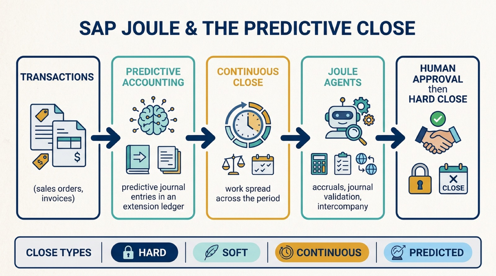

"Predicted close means analysis and closing activities are executed on the basis of predicted actuals instead of actual financial postings."
— SAP, on the continuous and predicted financial close
If you have ever lived through a month-end close, you know the pattern: a quiet first three weeks, then a frantic scramble of accruals, reconciliations, and journal corrections crammed into a few days. SAP Joule and predictive closing are meant to break that pattern by spreading the work across the whole period and letting AI agents do much of the preparation. By the end of this guide you will understand four things clearly: what predictive accounting actually is, what a "predicted close" means, how SAP Joule's AI agents orchestrate the close, and where the human accountant still sits in the loop. No prior SAP expertise required; every term is defined as we go.

First, What Is the "Close" and Why Is It Painful?
The financial close is the process of finalizing a company's books for a period (a month, quarter, or year) so it can report accurate results. It involves recording all transactions, posting accruals (entries for expenses or revenue that have been incurred but not yet invoiced), reconciling accounts, validating journal entries, and eliminating intercompany balances. Traditionally this work piles up at period-end, which is why finance teams describe close week as a sprint. To put the burden in perspective, finance teams report that accruals alone can consume 30 to 50% of total close effort. Predictive closing is, at heart, an attempt to stop saving all that work for the last minute.
What Is Predictive Accounting?
Predictive accounting is an SAP S/4HANA capability that gives you a future view of your accounting results by automatically posting predictive journal entries (and their later reversals) into a dedicated extension ledger. An extension ledger is a kind of overlay ledger: it stores extra, "what-if" postings on top of your real books without touching the legal financial records underneath.
The clever part is where the data comes from. Predictive accounting pulls information from areas outside Finance, such as Sales, from integrated products like SAP Concur, or even external systems, and uses it to estimate future results at any time. A simple example: the moment a sales order is created, predictive accounting can post a predictive entry for the revenue and cost that order will eventually generate, long before the goods ship or the invoice is raised. Finance then has an early, evolving picture of how the period is shaping up, and why.
Remember This
Predictive accounting does not touch your legal books. Predictive journal entries live in a separate extension ledger, so you can preview likely results without distorting the official numbers. "Predicted" and "actual" coexist side by side.
The Foundation: The Universal Journal
None of this would work without the data foundation SAP S/4HANA introduced: the Universal Journal (stored in a single table, ACDOCA). Before it, financial data was scattered across many separate tables that had to be reconciled against each other. The Universal Journal merges accounting and controlling data into one in-memory source of truth, which is what makes real-time, continuous, and predictive views possible in the first place. If you want the deeper architectural story, we covered how this same data model reshapes finance projects in our piece on governance pitfalls in S/4HANA Finance transformations.
Where SAP Joule Comes In
SAP Joule is SAP's AI assistant, or copilot, embedded across its applications. In finance it works in three modes: find (surface documents, open items, deviations, and tasks without endless clicking), understand (explain drivers, outliers, and root causes, with drilldowns), and act (jump straight into the relevant app or worklist). For the close specifically, SAP introduced a Financial Closing Assistant that coordinates multiple AI agents to orchestrate the full close lifecycle across posting, accruals, journal validation, error resolution, and intercompany reconciliation, with general availability planned for the second quarter of 2026. SAP describes the goal as compressing the close cycle from weeks to days, and it sits among a family of seven finance assistants covering closing, planning, billing, governance, tax and compliance, accounts receivable, and treasury. If Joule is new to you, start with our plain-language introduction to SAP Joule as an enterprise AI copilot and our rundown of its top use cases.
A Worked Example: The Accounting Accruals Agent
The clearest concrete example of "predictive closing" in action is SAP's Accounting Accruals Agent, released in SAP S/4HANA Cloud Public Edition (version 2602, generally available in March 2026). SAP calls it the first embedded agentic AI in its cloud ERP that autonomously performs substantive accounting work, produces output that can be booked, and explains its reasoning. Note the framing: this is not just a chat assistant, it is an agent that does the work. Here is its four-step loop:
- Policy ingestion. The agent reads your accounting policy documents to learn your accrual criteria, calculation methods, materiality thresholds, and period-end rules.
- Transaction analysis. It scans accrual-triggering transactions in the Universal Journal, such as open purchase orders and goods received but not yet invoiced, and applies those policy rules.
- Proposal generation. It produces structured accrual proposals, each a specific journal entry ready to post, shown in the "Manage Accrual Proposals" Fiori app.
- Explanation and human review. Every proposal comes with a plain-language explanation of why it was proposed and how the amount was calculated. A general-ledger accountant then accepts, modifies, or rejects it before anything is posted.
Remember This
The agent does not post on its own. It prepares and explains; the human approves. That human-in-the-loop design is the single most important thing to understand about how SAP is rolling out agentic AI in accounting, and it mirrors the broader governance pattern across enterprise AI.
The Four Close Types (Cheatsheet)
"Closing" is not one thing. Keeping these four straight will make every SAP finance conversation clearer:
- Hard close. The full, final close of a period. No further postings allowed. Always backward-looking, based on actual data. This is what gets reported externally.
- Soft close. An abbreviated close run during the period to issue statements faster. Quicker, but lower accuracy, so it is suitable for management reporting rather than external filing.
- Continuous close. Running soft-close activities steadily throughout the period instead of waiting for period-end, so the workload is spread out and issues are caught early.
- Predicted close. Performing analysis and close activities on the basis of predicted actuals, giving a near-final preview before the period even ends.
Common Misconceptions
A few traps trip people up when they first meet this topic. First, predictive accounting is not a forecast or a budget; it is an accounting-grade prediction posted in a separate ledger using real operational data, not a spreadsheet guess. Second, a predicted or soft close does not replace the hard close; it previews it. The legal, audited close still happens. Third, "agent" does not mean "unattended", at least not yet. As we saw, the accruals agent proposes and explains but waits for human approval. Confusing these is the fastest way to misjudge both the value and the risk. The broader shift toward systems that act on predictions, and how to govern it, is something we explored in our guide to how predictive analytics is moving from forecasts to autonomous decisions.
How to Apply It: A Sensible Starting Point
If you are evaluating predictive closing, the preparation matters as much as the technology. Practical groundwork includes writing your accounting policies in a clear, structured (machine-readable) form so an agent can ingest them, making sure your goods-receipt and invoice-receipt accounts are configured cleanly, assigning the right Fiori app roles to your accountants, and setting sensible materiality thresholds so the agent does not flood you with trivial proposals. Start with one high-effort, rule-based area such as accruals, prove the value, and expand. This is the same staged, govern-as-you-go approach that separates success from failure across enterprise AI, a theme that also runs through our look at how AI is reshaping the core of ERP.
Where This Fits in the Bigger Picture
Predictive closing is one of the most tangible early examples of agentic AI doing real, auditable knowledge work inside the enterprise. The destination SAP is steering toward is a close that is continuous rather than episodic, where predicted results are visible all month, AI agents prepare the heavy lifting, and humans spend their time reviewing and deciding rather than gathering and calculating. You do not need to adopt all of it at once to benefit. Understanding the vocabulary, predictive accounting, the extension ledger, the predicted close, and the human-in-the-loop agent, is the first step to evaluating it clearly when it lands in your own SAP landscape.